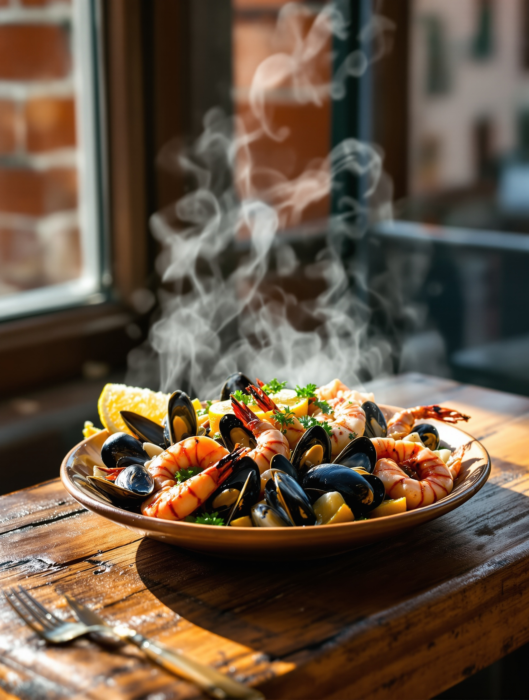
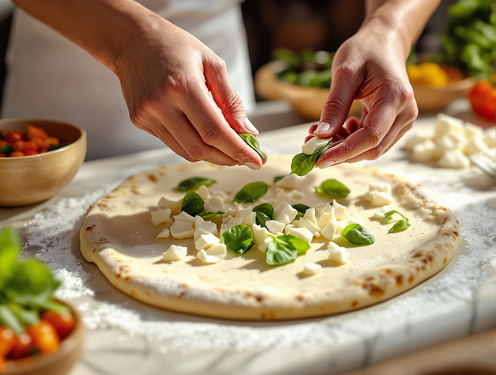
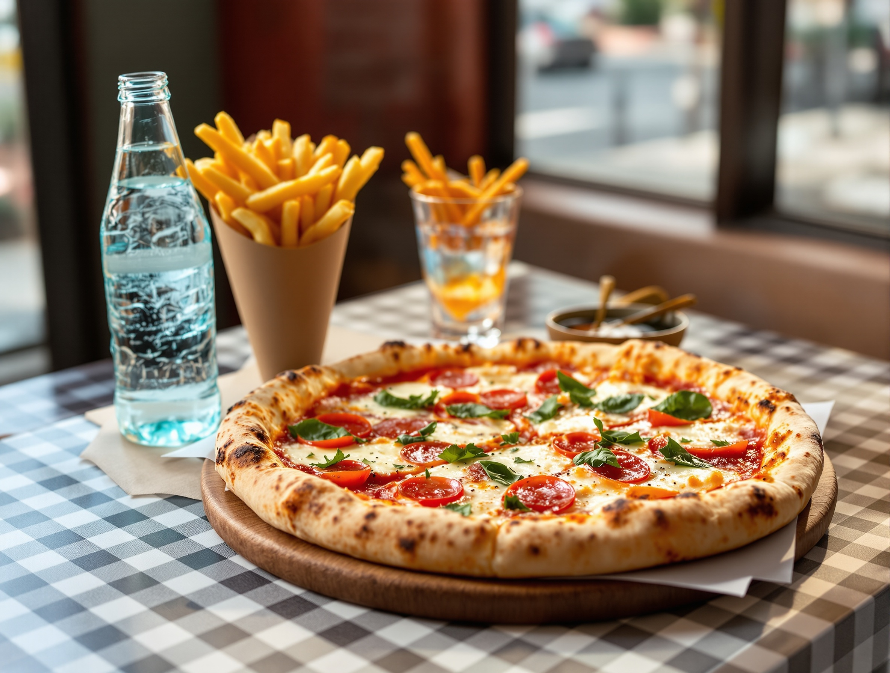
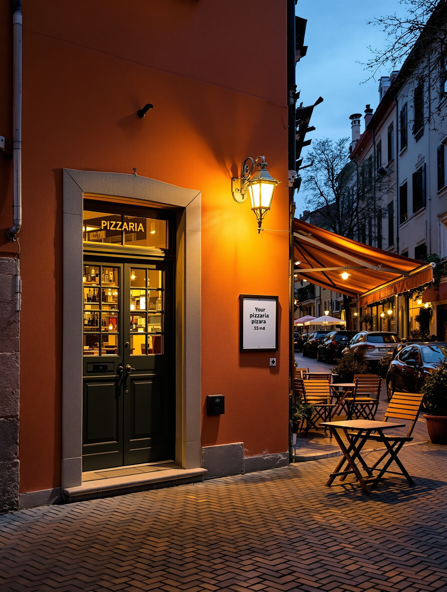

Forno e mare, sul Naviglio.
Pizza dal forno a legna e cucina di pesce, in una sola tavola.
Prenotazioni al telefono: 333 758 7705
Sul Naviglio Pavese, sull'acqua della Barona.
Siamo la pizzeria di quartiere su Via Lodovico il Moro.
La sera, quando le luci si accendono sul Naviglio, arriva chi vive qui: famiglie della Barona, coppie, comitive di amici.
Si cena bene senza spendere tanto. È un posto senza pretese, dove ci si trova come a casa.
Il cuore del menu esce dal forno a legna.
Le pizze classiche, la bufala, le speciali, lo sfilatino, i calzoni e le focacce. E se vuoi, la componi tu.
Classiche
Margherita, marinara, capricciosa, diavola. Le pizze di sempre, impasto leggero e crosta gonfia.
Bufala
Con mozzarella di bufala aggiunta a fine cottura, così resta morbida e fresca.
Speciali
Gli abbinamenti della casa, per chi vuole uscire dai classici.
Sfilatino
La pizza lunga da dividere e passare in tavola. Pensata per le comitive.
Calzoni
Ripieni e chiusi al forno, farciti come una pizza intera.
Focacce
Da condividere prima di ordinare, o da portare via.
La pizza la scegli tu.
Parti dalla base e aggiungi quello che ti piace. Te la sforniamo come la vuoi.

La stessa cucina fa anche il pesce.
È la parte che non ti aspetti da una pizzeria di quartiere. Pesce fresco, dall'antipasto al secondo.
Qui ognuno trova qualcosa.
Oltre al forno e al mare, la carta va anche più in là. Anche il couscous.

Il Menù Margherita.
La cena completa senza pensarci troppo. Pizza, patatine e da bere, tutto insieme.
- Pizza margherita dal forno a legna
- Patatine fritte
- Una bibita
Prenota, chiama o fatti consegnare a casa.
Quattro modi per sederti da noi o mangiare la nostra pizza sul divano.
Chiamaci
Ti teniamo il tavolo per la sera. Il modo più semplice per prenotare.
333 758 7705Scrivici un messaggio
Per due parole veloci: un tavolo, un dubbio sul menu, un ordine da ritirare.
333 758 7705Chiama per ordinare
Prendi da asporto o organizza la serata. Rispondiamo noi.
+39 333 758 7705Just Eat
La margherita col combo, a casa tua. Consegna sempre attiva sul quartiere.
Cerca “Lo Scoglio sul Naviglio” su Just EatCi trovi sul Naviglio, a Milano.

Via Lodovico il Moro, sul NaviglioOrari
- Martedì – DomenicaCena, fino alle 23:00
- LunedìSu richiesta
Telefono
Il quartiere ci frequenta da anni.
“Centinaia di serate, un giudizio che resta costante nel tempo.”
364 recensioni non sono poche per una pizzeria di quartiere. Sono le famiglie della Barona, le coppie e le comitive che tornano.
Chi ci sceglie racconta la stessa cosa: si mangia bene, si spende il giusto, ci si sente a casa. Forno e mare, senza pretese.